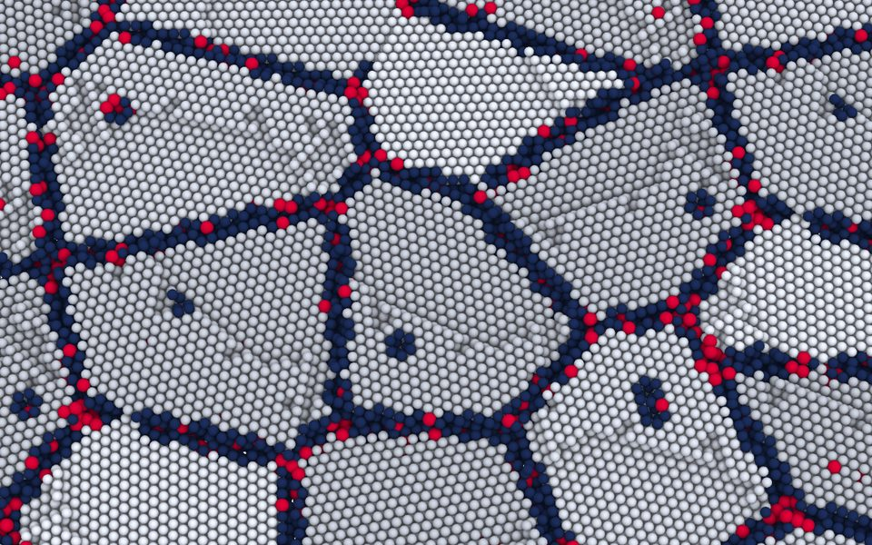
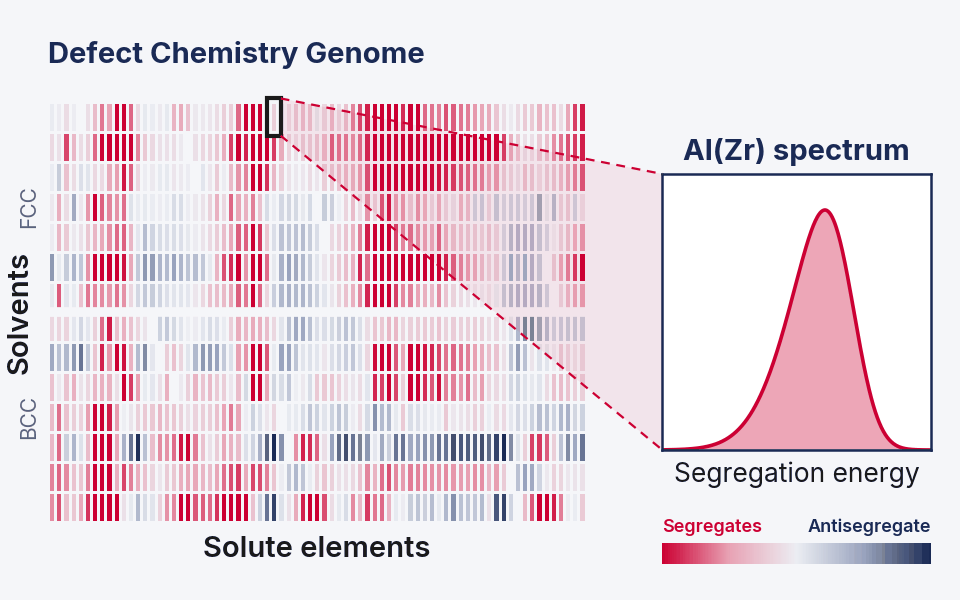

Defect Engineering in Crystalline Materials
Goals of Imperfection Engineering Group (IEG) are to provide a better understanding of defect structure-property relationships through accelerated modeling and simulations, and to provide materials defect genomes with a focus on defect-defect interactions. The ultimate aim is to apply the accelerated computational frameworks and genomic databases for discovery and design of engineering materials via defect engineering.

Fundamentals of Defects in Polycrystalline Materials
We study fundamentals of defects including point defects, grain boundaries and triple junction networks to understand how they govern both localized and macroscopic ensemble properties.

Materials Defect Genome
We apply ML-accelerated atomistic simulation to streamline high-throughput defect genome development for design of alloys and polycrystalline materials.
![Generic system design chart linking processing steps (melting, solidification, hot working, solution treatment, aging) to structural features (matrix, precipitates, grain refining dispersion, dislocations, stacking faults, interfaces, microsegregation, grain boundary chemistry) and properties (room- and high-temperature yield strength, fracture toughness, ductile-to-brittle transition temperature, fatigue resistance, creep rate, corrosion and oxidation resistance, density), beside an atomistic CALPHAD design column: an atomistic grain boundary icon plus a ternary phase diagram feeding a parametric design plot of solute A and solute B content with a design window](assets/img/theme-design-system.png)
Computational Materials Design
We apply the system design approach to combine classical CALPHAD with the materials defect genomes we develop to design broad classes of polycrystalline materials such as metals and alloys.
Modeling and Simulation of Materials Engineering Processes
We apply and develop AI/ML accelerated methods for materials engineering processes such as granular/particulate materials in pharmaceutical processes.